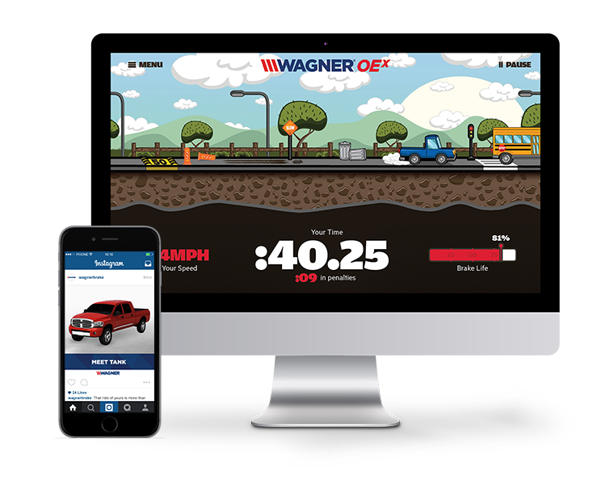

Поиск
Узнайте про мультимелию и найдите практическую работу, которую вам нужно и скачайте.

Мультимедиа (англ. multimedia) — контент, или содержание, которое одновременно передаётся в разных формах: звук, анимированная компьютерная графика, видеоряд. Например, в одном объекте-контейнере может содержаться текстовая, аудиальная, графическая и видеоинформация, а также, возможно, способ интерактивного взаимодействия с ней. Это достигается использованием определённого набора аппаратных и программных средств.

Термин мультимедиа также зачастую используется для обозначения носителей информации, позволяющих хранить значительные объёмы данных и обеспечивать достаточно быстрый доступ к ним (первыми носителями такого типа были компакт-диски). В таком случае термин мультимедиа означает, что компьютер может использовать такие носители и предоставлять информацию пользователю через все возможные виды данных, такие как аудио, видео, анимация, изображение и другие в дополнение к традиционным способам предоставления информации, таким как текст.
Мультимедийные презентации могут быть проведены человеком на сцене, показаны через проектор или же на другом локальном устройстве воспроизведения. Широковещательная трансляция презентации может быть как «живой», так и предварительно записанной. Широковещательная трансляция или запись могут быть основаны на аналоговых или же электронных технологиях хранения и передачи информации. Стоит отметить, что мультимедиа в онлайне может быть либо скачана на компьютер пользователя и воспроизведена каким-либо образом, либо воспроизведена напрямую из интернета при помощи технологий потоковой передачи данных. Мультимедиа, воспроизводимая при помощи технологий потоковой передачи данных может быть как «живая», так и предоставляемая по требованию.
Мультимедийные игры — такие игры, в которых игрок взаимодействует с виртуальной средой, построенной компьютером. Состояние виртуальной среды передается игроку при помощи различных способов передачи информации (аудиальный, визуальный, тактильный). В настоящее время все игры на компьютере или игровой приставке относятся к мультимедийным играм. Стоит отметить, что в такой тип игр можно играть как в одиночку на локальном компьютере или приставке, так и с другими игроками через локальную или глобальную сети.

Мультимедийный интернет-ресурс — сайт, в котором основная информация представлена в виде мультимедиа. Это современный и очень удобный механизм, который не заменяет собой выполнение классических функций, а дополняет и расширяет спектр услуг и новостей для посетителей.
Мультимедиа находит своё применение в различных областях, включая, рекламу, искусство, образование, индустрию развлечений, технику, медицину, математику, бизнес, научные исследования и пространственно-временные приложения.
В образовании мультимедиа используется для создания компьютерных учебных курсов (популярное название CBTS) и справочников, таких как энциклопедии и сборники. CBT позволяет пользователю пройти через серию презентаций, тематического текста и связанных с ним иллюстраций в различных форматах представления информации. Edutainment — неофициальный термин, используемый, чтобы объединить образование и развлечение, особенно мультимедийные развлечения.
Разработчики программного обеспечения могут использовать мультимедиа в компьютерных симуляторах чего угодно: от развлечения до обучения, например: военного или производственного обучения. Мультимедиа для программных интерфейсов часто создаётся как коллаборация между креативными профессионалами и разработчиками программного обеспечения.

В промышленном секторе мультимедиа используют как способ презентации информации для акционеров, руководства и коллег. Мультимедиа также полезно в организации обучения персонала, рекламы и продаж продукта по всему миру посредством фактически неограниченных веб-технологий.
В математических и научных исследованиях мультимедиа в основном используется для моделирования и симуляции. Например: учёный может взглянуть на молекулярную модель какого-либо вещества и манипулировать ею с тем, чтобы получить другое вещество. Образцовые исследования можно найти в журналах, таких как Journal of Multimedia.
Врачи также могут получить подготовку с помощью виртуальных операций или симуляторов человеческого тела, поражённого болезнью, распространённой вирусами и бактериями, таким образом пытаясь разработать методики её предотвращения.

Узнайте про мультимелию и найдите практическую работу, которую вам нужно и скачайте.
Я Шокиров Мухсин, Учусь в Томском индустриальном техникуме под номером группы 372.
 Ул. Кошурникова 1 кв 534.
Ул. Кошурникова 1 кв 534.
☎︎ +7 996 938 9632
✉ muxsin.shokirov@gmail.com